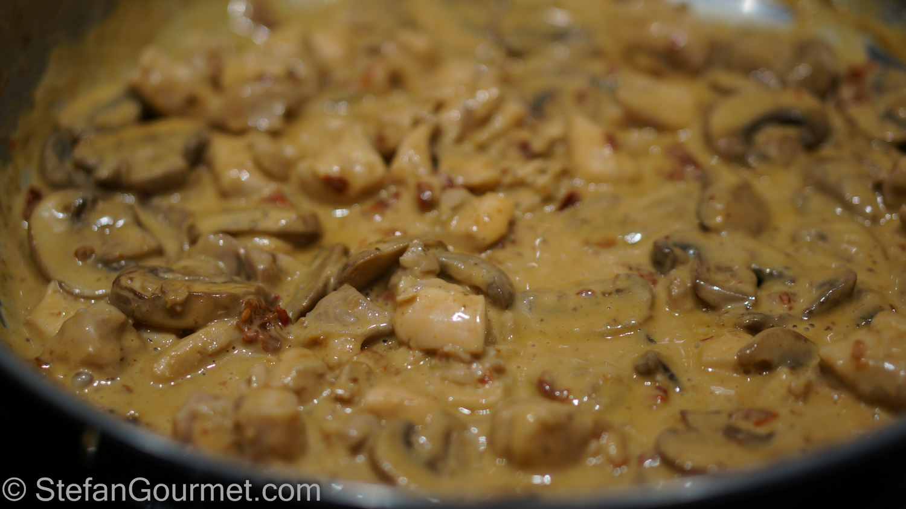

Mushroom Chicken
Mushroom Chicken

A saucy chicken and mushroom dish. Was served to me when i was a child and has become a common recipe on the weekly rotation.
can be enjoyed with rice,bread or with your choice of carb. It is also a great dish by itself. Mother orginally found it in a recipe
book for quick meals. since then it has changed to a family variations that changes from time to time.
Ingredients
- chicken breast: 2 pounds
- media crema: 2 cans
- canned chipotle your choice
- butter to your discretion
- salt to taste
- pepper to taste
Directions
- cut chicken into strips.
- remove stems from mushrooms and cut into smaller portions
- coat chicken with pepper and salt.
- add butter to pot and cook chicken until brown.
- degalze pot with chipotle sauce.
- place mushrooms in pot and cook for 5 minutes.
- mix in chicken and media crema with mushrooms and chipotle sauce.
- place on low and cook for 10 minutes, make sure to stir so cream does not seperate.
- serve with rice or your choice of grain